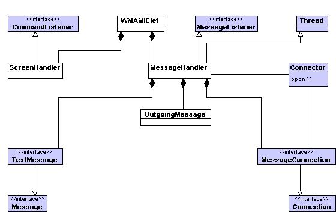
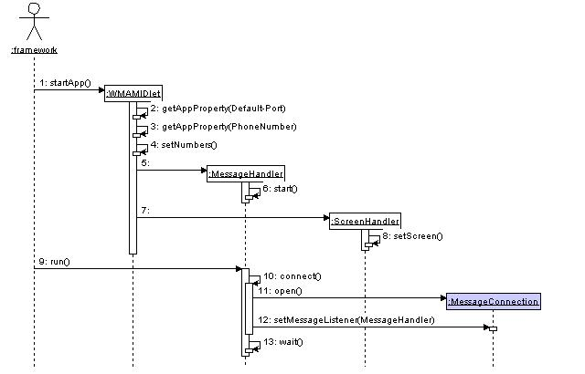
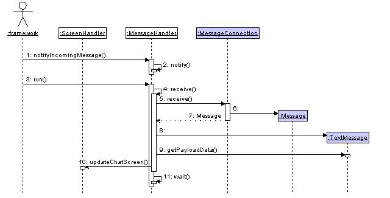
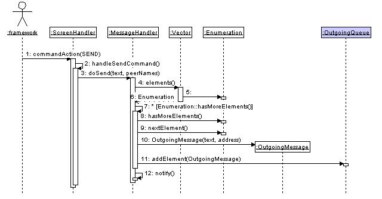
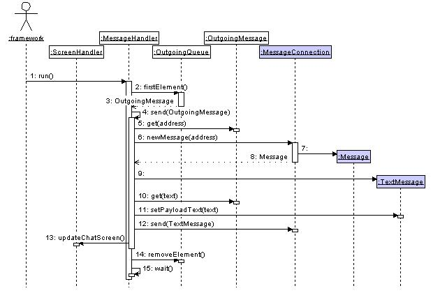
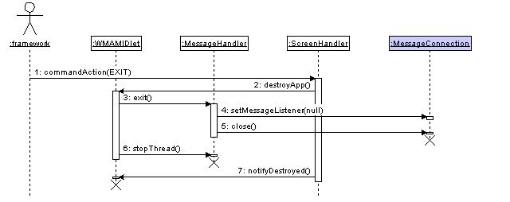

This example demonstrates how to send and receive messages between two devices using the wireless messaging API. The WMA package is used to send and receive messages over a wireless network. For example sending SMS (Short Message Service) messages between mobile phones. Whilst WMA messages may appear to be similar to Datagrams they cannot use the Datagram interfaces defined in the IO API as Datagrams are intended to be used with UDP connections.
The example makes use of the standard MIDP application framework and LCDUI API. The example also utilises the Thread class. The reader should be familiar with all these areas before attempting to understand this example.
This demonstration uses MIDP 2.0 and the optional package WMA (JSR 120).
The example is built using the standard method for building and running as described in Building and running the examples.
The following classes should be included in the jar:
com.nokia.midp.examples.wma.chat.*
No resource files are used.
A phone number is used as the address for an instance of the emulator and is needed when sending a wireless message to it, the other emulators must know these addresses. Configuring peers can either be done by using "change peers", "add peer" UI command when midlet is running, or by configuring the JAD file contains the phone numbers for the peers.
- The "Default-Port" property specifies the port on which the emulator is to listen for messages, this must be a different port for each emulator and is therefore defined in the JAD.
- Also in the JAD are the numbers of the other emulators which are hardcoded as the properties "Peers-x".
The MIDlets need to be started in numerical address/telephone number order (starting with the lowest first) if the example is to work correctly.
The following screen will be displayed requesting the user to enter a chat name.
- Select "Exit" at anytime during the running of the example and the connection will be lost and the MIDlet terminated.
- Enter a chat name in the "Enter chat name" text field.
- Select "Ok".
The next screen to be displayed will be the ChatScreen. The ChatScreen displays any messages sent to or received from any device, and is therefore blank initially. The "Menu" has two options, one to set the peers to send messages to and the other to write a message to the selected peers. Initially no peers are set.
- Select the "Change Peers" option from the menu on both emulators.
The following screen will be displayed.
- Select the peer number(s) which correspond to the emulators that are running.
- Select "Ok" from the "Menu" and the peers will be set and the user returned to the ChatScreen.
- Selecting "Cancel" from the "Menu" will return the user to the ChatScreen without the peers being set.
The user will be returned to the ChatScreen as shown below.
- Select "Write Message" from the menu of one of the emulators.
The following screen displaying an editable text field will be displayed.
- Enter some text in the text field.
- Select "Send" from the menu.
- Selecting "Cancel" from the menu will return the user to the ChatScreen without sending the message.
Both the emulator's displays will be updated with the sent text as shown below.
- Select "Write Message" from the other emulators menu.
The following screen will be displayed.
- Enter some text in the text field.
- Select "Send" from the menu.
Both screens will be updated with the sent text.
If more than two emulators are running then various combinations of Peers can be set. If an attempt to send a message is made with no peers set an alert will be displayed on the screen.
The Wireless Messaging API contains a set of interfaces used to send and receive wireless messages irrespective of the underlying message protocol. The standard MIDP IO API provides the Connector class and Connection interfaces and sub-interfaces to perform network connections. The MessageConnection provided by the Wireless Messaging API is also a sub-interface of the IO API Connection. This example uses the MessageConnection subinterface for the connection and receiving and sending of messages. The MessageListener interface is used to notify the application of incoming messages by defining the notifyIncomingMessage() method. The Message interface has sub-interfaces of TextMessage and BinaryMessage that act as a holder for the information to be sent or received. This example only processes messages of the type TextMessage, but the receiving and sending of BinaryMessages is similar to that of a TextMessage.
The example also makes use of the Thread class to perform the connection and sending and receiving of messages. These types of time consuming tasks should be performed in a seperate thread to that of the system thread which calls startApp() etc otherwise the system thread may not be available to perform other application tasks.
4.1. Class Diagram
The following table and diagram show the classes and interfaces involved in the datagram example.
Application Classes
WMAMIDletExtends the MIDlet class. The class handles the setting up of the application.ScreenHandlerImplements the CommandListener interface. Handles the UI display and the users interaction with it.MessageHandlerExtends the Thread class and implements the MessageListener. It provides the thread of execution for connecting, sending and receiving of messages. The thread waits for a notification from the user that there is a message to send or from the framework that there is a message to be receive.WMAFormExtends the Form class to provide the common elements for all the screens.ChatNameScreenExtends the WMAForm class. Provides the screen to enter a Chat name.ChatScreenExtends the WMAForm class. Provides the screen to display the sent and received messages.PeerListScreenExtends the WMAForm class. Provides a screen on which Peers can be selected.WriteScreenExtends the WMAForm class. Provides a screen to enter text to send to the chosen peers.OutgoingMessageProvides a holder for the data required by a message.System Classes and Interfaces
CommandListenerIs the interface that handles the commands made by the user.ConnectorIs responsible for creating instances of the Connection class. It provides the method to actually open a connection.ConnectionIs the basic type of interface for a connection and provides the close method for the connection.MessageConnectionMessageConnection is a subinterface of the generic interface Connection. MessageConnection provides methods to create new messages and to receive and send messages. MessageConnection also provides a method to register the MessageListener. The MessageListener must be de-registered on exiting the application by setting the MessageListener to null.MessageListenerThe MessageListener interface provides the mechanism which allows the application to receive messages concurrently. The networking examples have required a seperate thread to be started to provide for the blocking which occurs when waiting for a message. This interface provides the method notifyIncomingMessage() which is called by the platform every time a message is received. Message processing should be kept to a minimum in this method as this method is called by a system thread which should be released as soon as possible to enable the thread to go about other business.MessageThe Message interface acts as a holder for data that is to be sent or received over the MessageConnection. Message provides methods to get and set the address as well as getting the timestamp at which the message was sent. Message has subinterfaces of TextMessage and BinaryMessage to deal with the various types of data.TextMessageTextMessage is a subinterface of Message and provides methods to get and set the Payload Text.ThreadProvides a seperate thread of execution for a certain task.The Application classes which extend the Form class and the WMAForm class have been left off this diagram for clarity, the missing classes can all be described as belonging to the ScreenHandler.
4.2. Sequence Diagram
The following use case and sequence diagrams consider the scenario where a successful connection is made and data is sent and received successfully.
The following diagram considers the scenario where the user launches the MIDlet. It shows only the creation of the MessageHandler thread and the setting up of the connection, its sending and receiving functionality will be shown in other diagrams.

Message Description 1 The user launches the application, which causes startApp() to be called. 2 - 4 The MIDlet is set up with properties from the JAD file and the phone numbers set. 5 - 6 A new instance of MessageHandler is created and it's start() method is called. 7 A new instance of ScreenHandler is created. 8 The current screen is then set to display the screen requesting the user to enter a Chat name. 9 The framework calls the MessageHandlers run() method. 10 - 11 MessageHandler's connect() method is called and a connection is opened. 12 The setMessageListener() method on the connection is called, setting the object which is to be notified when a message is received on this connection. 13 The thread then begins waiting to be notified tht it has something to do. The MessageHandler thread waits to be notified either by the notifyIncomingMessage() method that there is a message to be received or by the commandAction handler that there is a message to be sent. The following diagram shows the scenario where the MIDlet is notified of an incoming message.

Message Description 1 - 2 The framework notifies the MessageHandler that a message has been received on the connection by calling notifyIncomingMessage().The thread is then notified that it has something to do. 3 The framework calls the run() method of the thread. 4 - 6 The receive() method of the thread is called which in turn calls the receive() method on the connection. 7 - 8 The Message returned by the receive() method is cast into a TextMessage. 9 - 11 The payload of the TextMessage is then used to update the ChatScreen and once the IncomingQueue is empty the thread goes back to waiting. The following diagrams show the scenario where the user makes a request to send a message. The first diagram shows the functionality upto the notification of the thread that it has to do something.

Message Description 1 - 2 The user requests for the message to be sent, which causes commandAction() to be called, this in turn calls handleSendCommand(). 3 handleSendCommand() calls the doSend() method of MessageHandler. 4 - 6 An Enumeration of the currently selected peer names is made. 7 - 11 For each peer name in the enumeration an OutgoingMessage object is created with the message text and the address to send it to. The OutgoingMessage is then added to the vector OutgoingQueue. 12 The notify() method is called to notify the thread that it has something to do. The following diagram shows the scenario where the thread has been notified that it has something to send.

Message Description 1 When notified the run() method of the thread is called. 2 - 4 The run() method gets the first element on the OutgoingQueue vector and calls it's send() method with this OutgoingMessage as a parameter. 5 - 9 The address of the OutgoingMessage is used to create a new Message which is then cast to be of type TextMessage. 10 - 11 The text from the OutgoingMessage is used to set the payload text of the TextMessage. 12 The TextMessage is then sent. 13 - 14 The ChatScreen is updated and the message is removed from the OutgoingQueue. Once the OutgoingQueue is empty the thread goes back to waiting. The following diagram shows the scenario where the user requests to exit the application.

Message Description 1 The user exits the application which causes commandAction() to be called. 2 commandAction() calls the destroyApp() method of the MIDlet. 3 - 5 The exit() method of the MessageHandler is called, which sets the MessageListener to null and closes the connection. 6 The thread of the MessageHandler is terminated. 7 The notifyDestroyed() method is called and the example terminated.
This example has demonstrated:
- How to make a MessageConnection.
- How to send a TextMessage.
- How to receive a TextMessage.
- How to close a MessageConnection.